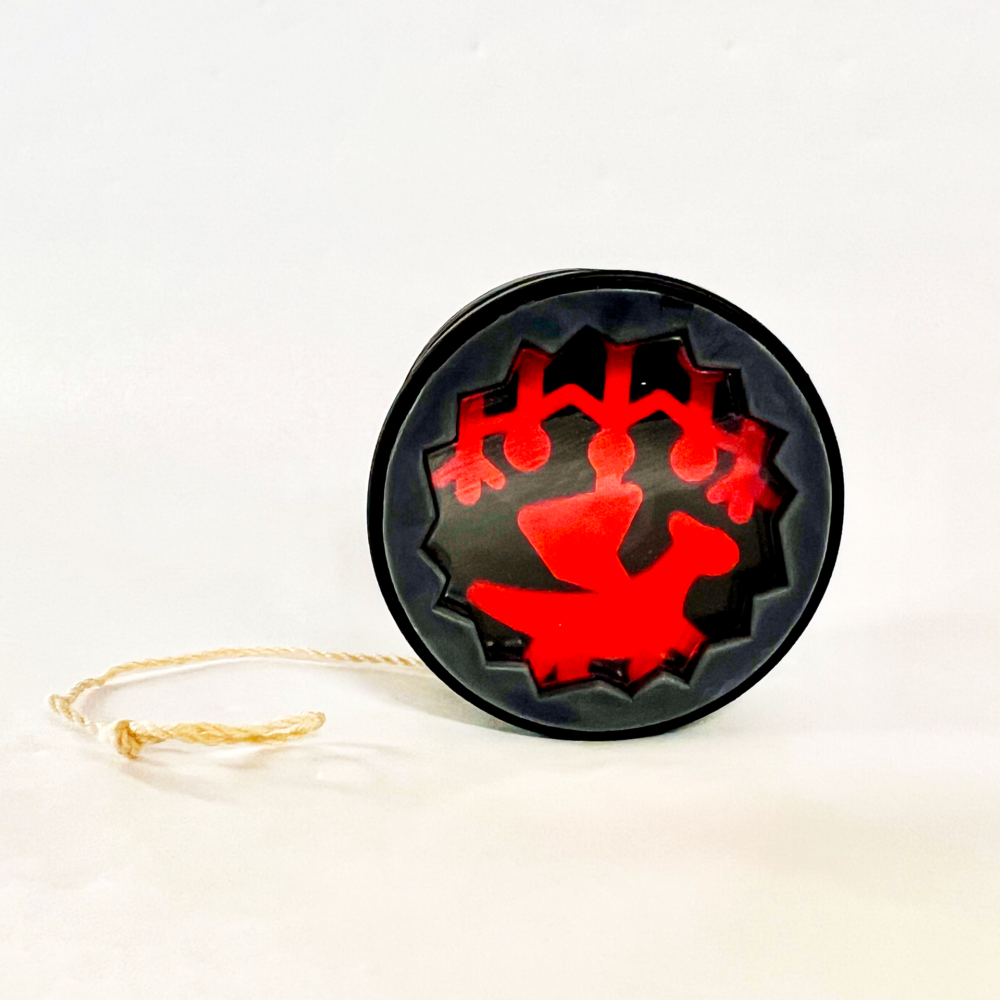

Design it.
Build it.
Test it.
I’m a mechanical engineer focused on turning analytical models and CAD into working hardware—from precision mechanisms and manufacturing systems to robotics and experimental equipment.
Projects built from the hardware up
Detailed case studies showing the design decisions, manufacturing process, testing, iteration, and final results behind my work.

Axial Excellence Precision Lathe
A six-person precision machine design project taken from analytical modeling and detailed CAD through machining, integration, alignment, and measured cutting performance.

Injection-Molded Yo-Yo
A production-focused project culminating in more than 50 finished yo-yos. I owned the main body from concept through CAD, CAM, mold machining, injection molding, and iteration.
Engineering beyond the screen
I enjoy projects where mechanical analysis, detailed design, manufacturing, and experimental validation all matter.
Design + analysis
CAD, tolerance decisions, stiffness and thermal modeling, FEA, mechanism design, and translating functional requirements into hardware.
Build + validate
CNC/manual machining, prototyping, assembly, instrumentation, troubleshooting, measurement, and iterating until the physical system works.